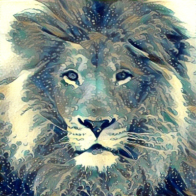
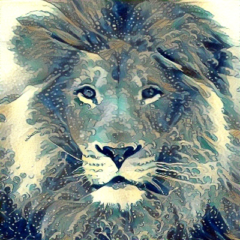
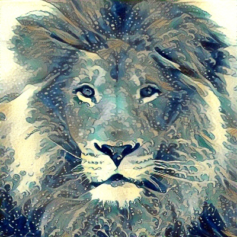
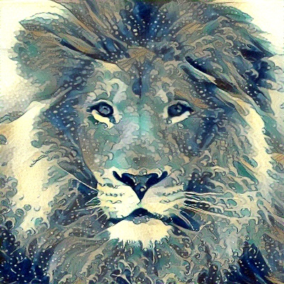
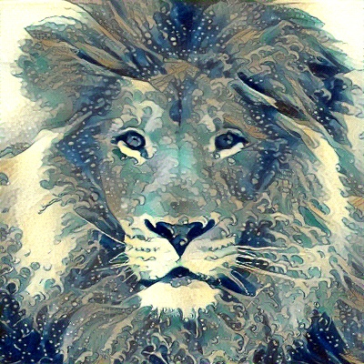

Talent is long patience, and originality an effort of will and of intense observation.
• Inspected and created routine queries on BigQuery(BQ) for data validation as a very first data engineer intern at FedEx Ground.
• Wrote pyspark scripts for data transfer (from Teradata, Oracle,SAS to GCP) and a cloud function to automate scheduling them on GCP composer (Airflow) whenever there's new data.
• Managed a 100 TB+ BQ data warehouse, created external tables from parquet/CSV files in order to minimise the google cloud storage space cost, and partitioned data via Hive to improve query performance.
• Engineered time series features and models(XGBoost, LightGBM, Catboost, Random Forest, SARIMA, Prophet, LSTM, ESRNN, etc.) for predicting company’s general ledger in distributed ML system via Ray, and then wrote Dataflow code (Apache Beam) for uploading model prediction information to BQ.
• Inspected codebase that examines the past trend of general ledger accounts using time series methods(ex.seasonal decomposition, ADF, ARCH,GARCH).
• Developed deep auto-encoders and used PCA, T-SNE, UMAP, PaCMAP for data visualization of opioid craving relapses.
• Built Random Forest to identify/update potential mislabels and XGBoost, LightGBM, CatBoost to predict the opioid craving onset.
• Performed feature crossing and feature selections to improve models’ accuracies and minimize the Google Cloud Function cost.
• Contributed to developing a mobile application using JavaScript, Node Js, React Js, Redux, Chakra UI and Firebase.
• Performed Fourier Spectral Analysis on audio clips of lung diseases and optimized code performance through multi-processing.
• Performed data wrangling, analysis tasks (ex. A/B tests, HAQ-DI) on clinical datasets for a pharmaceutical company in US.
• Implemented doubly linked list and hash-map to design a cache with LRU eviction policy for reducing server response time and wrote optimized Hadoop MapReduce codes for more rapid data analysis for a start-up.
• Developed an app (via Python Kivy, Travis CI) that accounts for man-strength of different countries’ warships.
• Built regression models using machine learning algorithms (Lasso, Ridge, ElasticNet, Random Forest) and applied optimization techniques to raise the firing accuracy of A-gun on a Tank Landing Ship of Republic of Singapore Navy.
• Developed the inference pipelines for classification models, via Azure ML studio and Google Cloud AutoML Vision, and deployed them to assist navigation team and lookouts in identifying potential hazards, such as submarines.
Yuuzoo Corp, Marketing Department, Singapore. Data Analyst Intern, May – Aug 2016
• Utilized web scraping techniques in R to extract and present competitors’ data using Tableau and Power BI.
• Optimized MySQL database performance by indexing, schema design and memory caching to deal with scale and improve throughput, while strengthening the database against SQL injections.
•Web-scrapped information regarding hundreds of houses from Zillow using jquery, built XGBoost, LightGBM, GAM and ensemble methods to predict house pricing, automated the modelling process in ResNet transfer learning pipeline and optimised the architecture to improve the prediction's MAPE. May 2022-Aug 2022
•Drove remote controlled rover and assisted with data collection for mapping unknown environments using ROS and Rviz,researched on existing local and global feature descriptors(ex. HoG,CoHoG,BoW), SLAM techniques(Ex.EKF, Rao-blackwellized particle filters,Pose graph), popular VPR techniques(ex.AlexNet, DenseVLAD,AP-GeM), retrieval methods(ex. chow-liu tree, HNSW graphs, k-d tree), Point Cloud compression methods( KD-tree compression, octree-based algorithm, geometry-based and voxel-based methods).
,investigated and presented potential application of seqSLAM and hierarchical SLAM for complex map localisation for CMU AirLab. May 2022-July 2022
• Built parallel computing solutions for competitive-pricing constrained optimization algorithms and researched graphical lasso’s use in estimating a sparse substitution matrix in product network with Zoey Jiang (CMU Prof. of Business Tech). July 2021-Sept 2021
• Built customised FixMatch (SOTA semi-supervised pipeline) to predict a student’s GPA for CMU Health Research Lab. Jun 2021-Aug 2021
• Coded video data for behavioral and speech recognition in CMU BAR (Behavioral Alcohol Research) study. Oct 2019-Dec 2020
• Performed statistical analysis and stochastic-actor oriented network analysis to model change in social network and behaviour of Hungarian primary school students to determine what factors can optimise one’s academic performance and how one's relative academic performance in social group influences one's academic performance growth. Spring 2023
• Improved an open-source social web’s image search system by adding computer vision features via Azure API. Spring 2023
• Analysed datasets released by 2023 NFL Big Data Bowl Kaggle competition, performed frame ID modelling and received positive feedbacks from Michael Lopez, a senior Director of Football Data and Analytics at the National Football League(NFL) who organized the competition. Fall 2022
• Built and optimised LAS(Listen, Ateend and Spell), a neural network that learns to transcribe speech utterances to characters, from scratch. Fall 2022
• Built and optimised ConvNeXt and GRU/LSTM from scratch, placing in top 25 out of approximately 250 competitors for 2 CMU deep learning competitions. Fall 2022
• Developed and optimised neural network, KNN, SVM to help junior hockey teams predict and maximize their scoring potentials. Mar-May 2021
• Led a team of 5 engineers in developing a COVID_19 Mobile Application for Elizabeth Glaser Pediatric Aids Foundation via PowerApps. Sep-Dec 2020
• Led a team of 8 engineers in developing a 2D Unity zombie shooter game with complex game AI and vast maps through Scrum methodology. Aug-Dec 2020
I am a medal of military honour recipient and also a 2021-2022 SBVPO(Student Body Vice President of organizations) at Carnegie Mellon majoring in Statistics & Machine Learning with two intended minors in Human-Computer Interaction and Business Analytics & Optimisation. Moreover, I am not only one of CMU's Quantitative Social Science Scholars of 2023, but also a tech director of CMU Business Technology Group. I am deeply interested in pursuing careers related to applied data science, machine learning, and consulting. My working experiences include data analysis at Yuuzoo Corp(E-commerce company), SWE and ML engineering at Singapore Armed Forces, software development and data science at Behaivior. During my free time, I work as a freelance programmer/analyst/translator.
